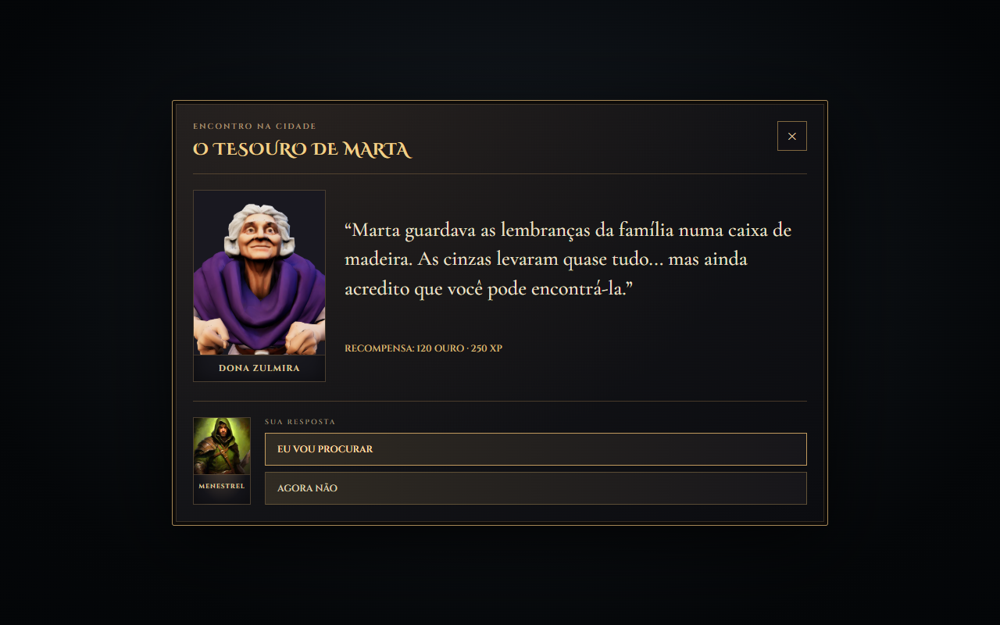
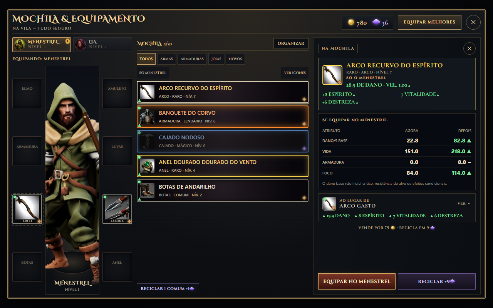
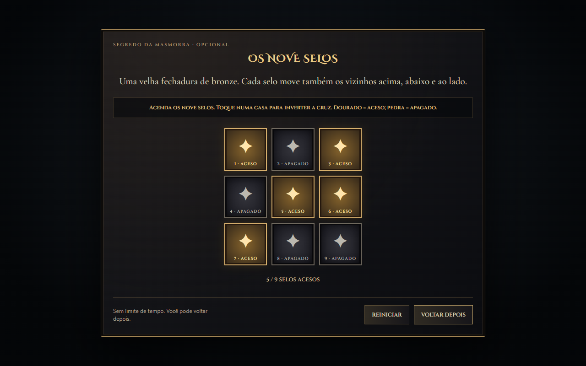

Conversas com retratos
Veja o NPC, o personagem que você controla e as respostas disponíveis na mesma janela. Missões, negociação e conversas com moradores ganharam uma apresentação própria, com retratos dos modelos do jogo.

Esta rodada melhora a apresentação antes de avançar a história: conversas com identidade, equipamentos mais fáceis de entender e novos motivos para explorar as masmorras.
Veja o NPC, o personagem que você controla e as respostas disponíveis na mesma janela. Missões, negociação e conversas com moradores ganharam uma apresentação própria, com retratos dos modelos do jogo.

A mochila abre com uma lista de nomes, tipos e raridades. Filtre armas, armaduras, joias e novidades; confira quem está sendo equipado e compare os valores antes e depois da troca. Se preferir, a grade de ícones continua disponível.

Examine os mecanismos ancestrais nas salas das masmorras. No Eco das Quatro Runas, siga a ordem da inscrição. Nos Nove Selos, cada toque altera uma cruz: acenda todas as casas para liberar o tesouro.
